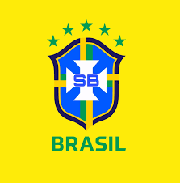

O botafogo carimbou a vaga na final da Libertadores, nesta quarta-feira (30), após eliminar o Peñarol.
Com a classificação, o Alvinegro embolsará US$ 7 milhões (R$ 40 milhões), acumulando US$ 16,9 milhões
(R$ 96 milhões) em premiações.
O Botafogo vai jogar a final contra o Atlético-MG, no estádio Monumental de Núñez. Na partida de ida
da semifinal, no Nilton Santos, o Botafogo colocou um pé na decisão com uma goleada histórica de 5 a 0
sobre o Peñarol. Na volta, no Centenário, o Alvinegro foi derrotado por 3 a 1, somando 6 a 3 no agregado veja gols abaixo.

11/11/2024
O técnico
Dorival JúniorDorival Júnior anunciou nesta sexta-feira a lista de 23 convocados para
defender a seleção brasileira nos duelos contra Venezuela e Uruguai, pelas eliminatórias para a Copa do Mundo,
neste mês.
Veja a lista completa:
listas dos jogadores convocados:
Goleiros:Bento (Al-Nassr), Ederson (Manchester City) e Weverton (Palmeiras)
Zagueiros:Léo Ortiz (Flamengo)*, Gabriel Magalhães (Arsenal), Marquinhos (PSG) e Murillo (Nottingham Forest)
Meio-campistas:André (Wolverhampton), Andreas Pereira (Fulham), Bruno Guimarães (Newcastle), Gerson (Flamengo), Lucas Paquetá (West Ham) e Raphinha (Barcelona)
Atacantes:Estêvão (Palmeiras), Igor Jesus (Botafogo), Luiz Henrique (Botafogo), Gabriel Martinelli (Arsenal)*, Savinho (Manchester City) e Vinicius Junior (Real Madrid)